请注意，此文默认读者已经对DSP及CCS V3.3环境有一定的了解了，知道cmd文件的配置，知道新建工程，编译并连接仿真器下载！如果你对这些还都不熟悉，请先熟悉这些！当然，最好要有操作系统的基本概念——任务、调度、中断！
第一个问题：DSP/BIOS（好吧，我们一般这样写）是什么？
是TI公司专门为DSP开发的嵌入式实时操作系统，既然是TI公司为自己的DSP开发的——官方的，当然性能是杠杠的了（当然，我还在入门，这点也是道听途说，没有实际体会）。既然说到实时操作系统，那还有哪些嵌入式实时操作系统呢？Linux是吗——不是，VxWorks——是，哦，还有一个小的开源系统——uCOS II也是。
问题二：要使用DSP/BIOS，需要安装什么环境呢？
本文为CCS v3.3，默认就安装上DSP/BIOS，版本为V5.31.2（可以通过Help->About...菜单查看版本）。当然，如果需要其它版本（可以同时安装多个版本），可以到TI官网下载，链接：
http://software-dl.ti.com/dsps/dsps_public_sw/sdo_sb/targetcontent/bios/dspbios/README.html
请注意：DSP处理器型号、CCS版本、DSP/BIOS版本之间存在兼容性，请注意选择！
下载后安装到CCS所在目录，通过Help->About...中的Manager选择使用的BIOS版本！
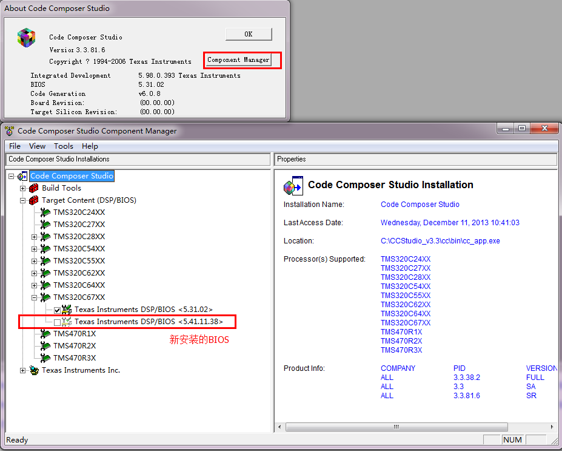
本文使用的是CCS V3.3默认的DSP/BIOS版本，即V5.31.2。无特殊说明，本文的例子运行在TI的CCS 3.3软件仿真模式下，仿真环境配置如下（使用C6713处理器仿真）：
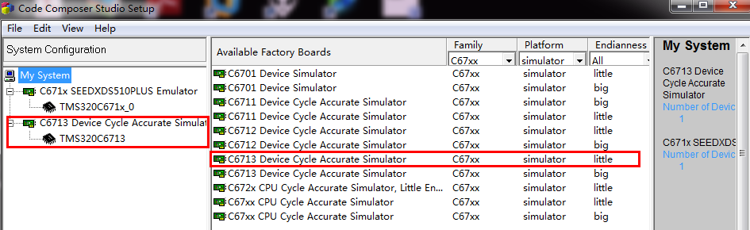
问题三：如何建立第一个BIOS工程？
先建立一个普通工程，Project->New...，如下：
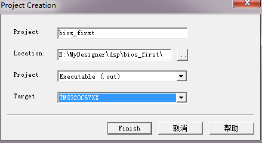
File->New->DSP/BIOS Configuration...新建DSP/BIOS配置文件，
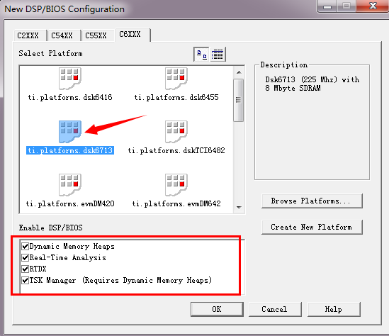 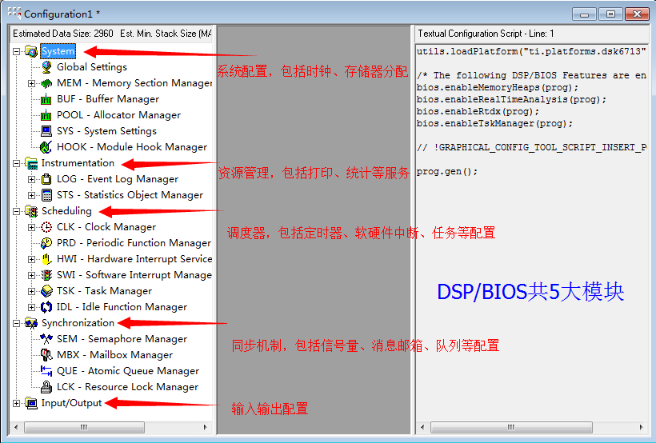
保存一下，配置文件的后缀为*.tcf.
将配置文件和由配置文件自动生成的cmd文件添加到工程，
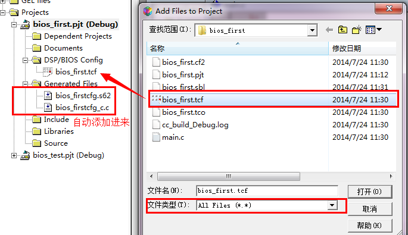
新建一个main.c文件，把main.c添加到工程（总是忘记这个然后还到处找问题），写个最简单的代码吧，
int main(void)
{
return 0;
}编译一下工程，此时出现错误提示：
js: "./bios_first.tcf", line 11: Heaps are enabled, but the segment for DSP/BIOS Objects (MEM.BIOSOBJSEG) is not set correctly. Please create a heap in one of your data segments and set MEM.BIOSOBJSEG to it.没关系，在下一小节将看到怎么去掉该错误！
系统配置
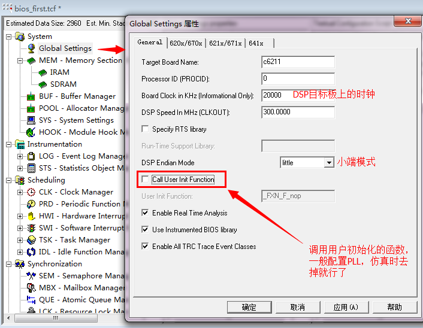
在Global Setting上右键属性，设置DSP目标板时钟，CLKOUT时钟以及大小端模式。
关于Call User Init Function选项，默认是打开的，如果连接有实体目标板，则最好在此处设置用户初始化PLL及EMIF等的代码的函数（有关PLL初始化话的代码参考其它C6713的工程）。否则软件仿真模式下，则去掉该选项能在运行时避免不少错误。
接下来配置SDRAM及堆大小，
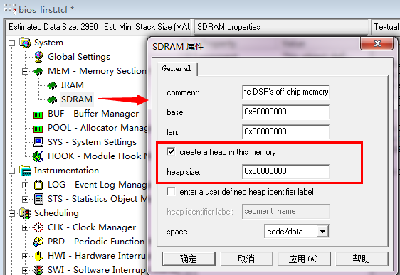 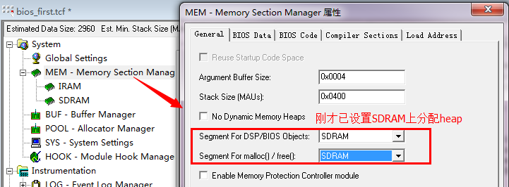
现在可以重新编译一下工程了，恭喜恭喜，编译成功！之前提示的堆错误就在这里解决的！
现在，就需要根据需求对SDRAM的存储空间进行划分（就是以前没使用操作系统时要写cmd文件一样，这里的划分将自动生成或修改cmd文件）。使用DSP/BIOS很方便，在MEM上右键Insert MEM就可插入分区了！这部分功能对应到cmd上就是类似于cmd中MEMORY的功能，
MEMORY
{
BOOT_RAM: o=00000000h,l=00000400h
IRAM : o=00000400h,l=0003FC00h
/* CE2: SDRM 256Mbit */
SDRAM: o = 80000000h,l=01000000h /* 128Mbit */
GB_MEM: o = 81000000h,l=01000000h /* 128Mbit */
/* Flash */
FLASH_BOOT : o=90000000h,l=00000400h
FLASH_REST : o=90000400h,l=000FFB00h
}LOG的配置
LOG功能说白了就是用来实现printf的，STS用来捕获任意对象的计数值。
在LOG上右键Insert LOG，插入一个trace的打印对象，
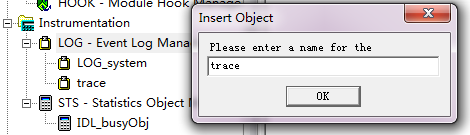
在main.c中编写如下代码，
#include "bios_firstcfg.h" // DSP/BIOS自动生成，可以在工程下找到，包含了对trace的声明以及相关头文件的包含
int main(void)
{
LOG_enable(&trace);
LOG_printf(&trace, "Hello DSP/BIOS %d.", 0);
return 0;
}编译通过后装载程序，打开菜单DSP/BIOS->Message Log，运行程序效果如图，
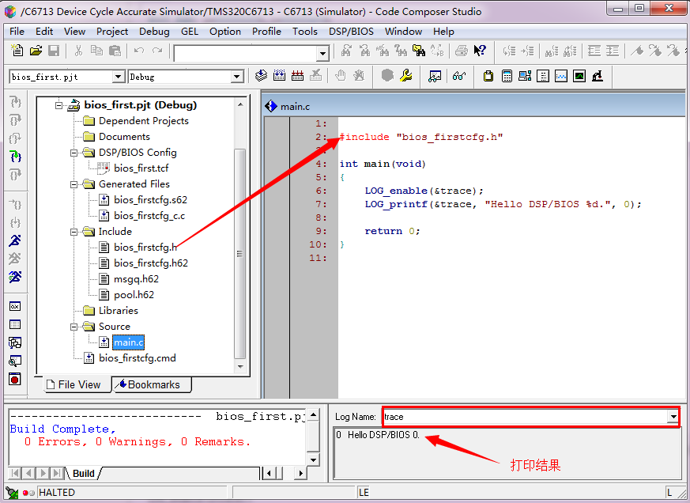
注意，上面的程序中是通过LOG_printf函数而非printf打印消息的，其它的有关LOG的函数还有，
LOG_disable. Disable the system log.
LOG_enable. Enable the system log.
LOG_error. Write a user error event to the system log.
LOG_event. Append unformatted message to message log.
LOG_event5. Append 5-argument unformatted message to log.
LOG_message. Write a user message event to the system log.
LOG_printf. Append formatted message to message log.
LOG_printf4. Append 4-argument formatted message to log.
LOG_reset. Reset the system log.好了，这是我们学习DSP/BIOS遇到的第1个模块（Module）——LOG模块。
其实DSP/BIOS中还有很多模块，参考TI文档《SPRU430S：TMS320C6000 DSP/BIOS 5.x Application Programming Interface (API) Reference Guide》
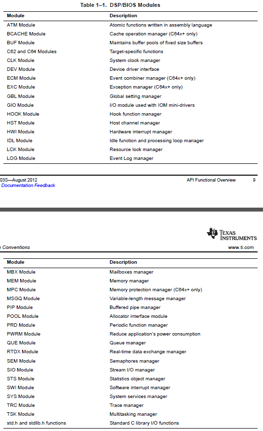
任务模块的配置
操作系统最基本的就是任务，我们先来看看任务！新建两个任务，右键属性设置任务函数名，如图，
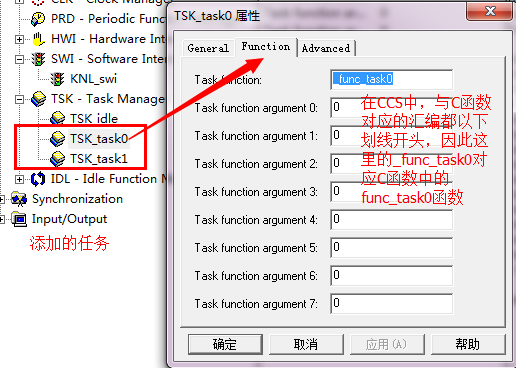
对TSK_task1做相同的配置，请注意，其中的Task function要在C函数前加下划线！
在main函数中添加两个任务的代码，
void func_task0(void) // 对应刚才的_func_task0
{
static Uint16 TSK0 = 0;
while (1) { // 任务一般都有死循环，只执行一次的任务意义不大
LOG_printf(&trace, "TSK0=%u", TSK0++);
TSK_yield();
}
}
void func_task1(void) // 对应刚才的_func_task1
{
static Uint16 TSK1 = 0;
while (1) {
LOG_printf(&trace, "TSK1=%u", TSK1++);
TSK_yield();
}
}重新编译装载，运行后在Message Log窗口下看到的效果如下：
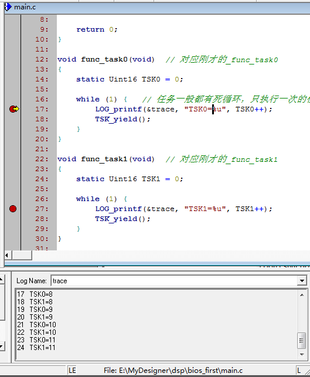
操作系统的任务都是死循环的结构，要实现任务调度必须要让每个任务有空闲的时间，不妨把上面代码中的TSK_yield()注释掉，重新编译装载运行，此时程序会一直在func_task0中执行。
TSK_yield在这里的作用就是如果有相同优先级的任务，则调度到同优先级的其它任务执行！
TSK模块的属性有很多，除了设置函数名外，还可以设置优先级、输入参数等！调度函数也有很多，另一个常用的是使用睡眠调度函数——TSK_sleep，其使用如下：
void func_task(void)
{
while(1) {
// 处理代码
TSK_sleep(100); // 100表示系统时钟计数
}
}软中断SWI模块的配置
中断具有比任何任务都高的优先级，而其中硬件中断（HWI）又比软件中断（SWI）优先级更高。
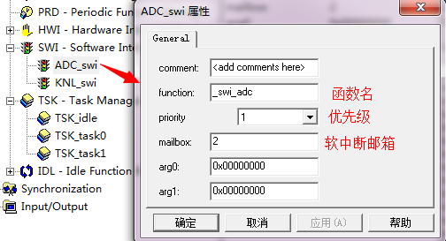
软中断邮箱不是信号中的消息邮箱，但机制类似，上面的值为软中断邮箱的复位值！
一旦软中断邮箱的值达到0时，触发软件中断，触发后一次执行完成（除非被硬件中断打断），执行完后软中断邮箱恢复到复位值！由于是一次执行完成，因此与任务不同，软中断中绝不会有死循环（否则就一直执行软中断，任务就别执行了）！
接下来完成软中断函数中的内容：task1每执行2次，触发一次软中断，软中断计数值+1。
void func_task1(void) // 对应刚才的_func_task1
{
static Uint16 TSK1 = 0;
while (1) {
LOG_printf(&trace, "TSK1=%u", TSK1++);
SWI_dec(&ADC_swi); // 软中断邮箱计数值递减
TSK_yield();
}
}
void swi_adc(void)
{
static Uint16 adc_cnt = 0;
LOG_printf(&trace, "SWI_ADC=%u", adc_cnt++);
// 一次执行完后，邮箱值恢复为初始值2
}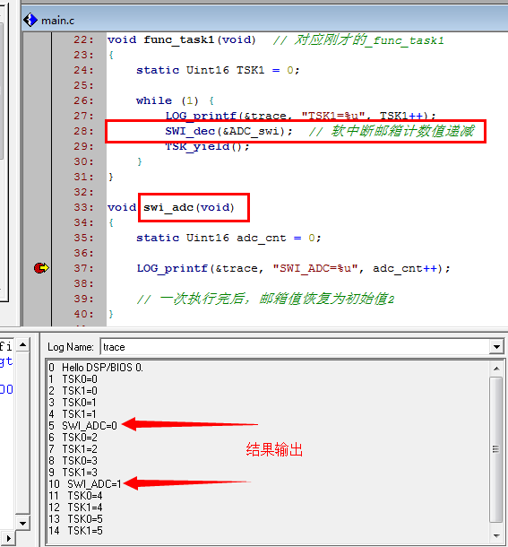
SWI_dec()函数用于修改软中断邮箱的计数值，其它对软中断邮箱操作的函数还包括：
void SWI_or(swi, mask); // 邮箱值与mask进行或操作，当值为0时触发软中断
SWI_Handle swi; /* SWI object handle*/
Uns mask; /* value to be ORed */
void SWI_andn(swi, mask); // 邮箱值与mask进行与非操作，当值为0时触发软中断
SWI_Handle swi; /* SWI object handle*/
Uns mask /* inverse value to be ANDed */
void SWI_inc(swi); // Increment SWI’s mailbox value and post the SWI
SWI_Handle swi; /* SWI object handle*/
void SWI_dec(swi); // Decrement SWI’s mailbox value and post if mailbox becomes 0
SWI_Handle swi; /* SWI object handle*/6000系列的DSP软中断邮箱为32位，2000系列为16位。下面是从刘鑫茂的DSP/BIOS讲座PPT中截取的软中断邮箱函数的对比图及操作时邮箱值的变化过程图：
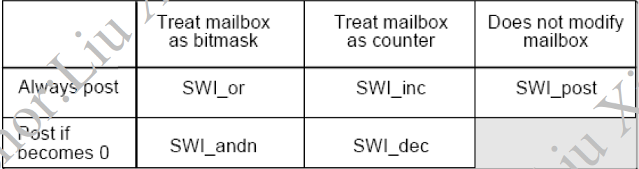 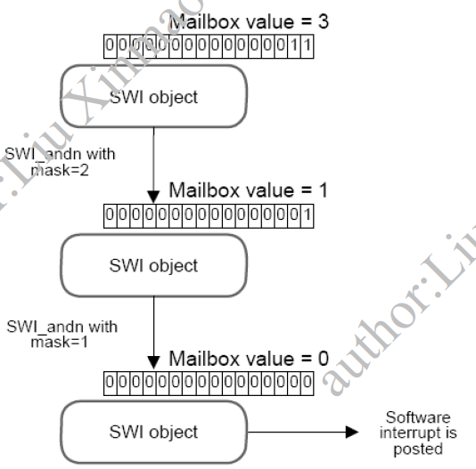
信号量SEM模块的配置
信号量分互斥信号量和计数信号量，互斥信号量只有两种状态：可用于不可用，计数信号量通过设置一个计数值，如果计数值大于0，则任务请求该信号量时不被阻塞。
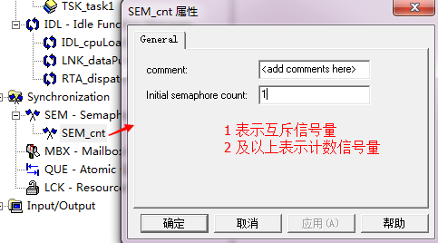
编写程序：现在是任务执行2次进一次软中断，这里将信号量初始值设为1，task0中使用SEM_pend等待信号量，task0执行1次就进入等待状态，再过一次，进入软中断，软中断中使用SEM_post发布信号量，信号量值增1，task0收到信号量后从等待状态返回，继续执行！
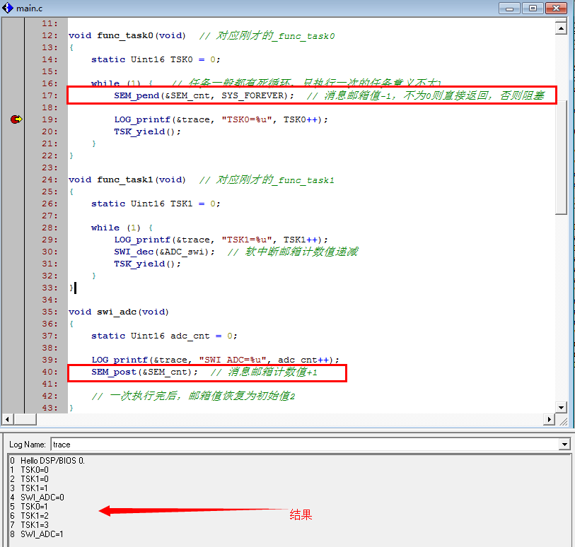
status = SEM_pend(sem, timeout);
SEM_Handle sem; /* semaphore object handle */
Uns timeout; /* return after this many system clock ticks */
返回值：Bool status; /* TRUE if successful, FALSE if timeout */如果timeout=0表示不等待继续执行，SYS_FOREVER表示一直等待直到信号量的值大于0。SEM_post()函数相对简单，不赘述。
输入输出——实时数据交换模块配置
不知注意到没有，软件仿真模式下，使用Load装载程序时总会弹出如下的警告框，
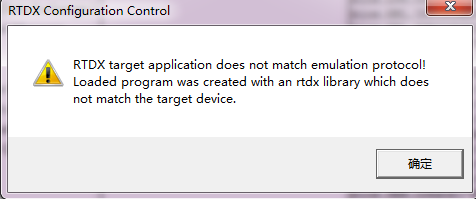
这就是RTDX模块没有配置的问题，在输入输出的RTDX模块上右键属性，配置如下，
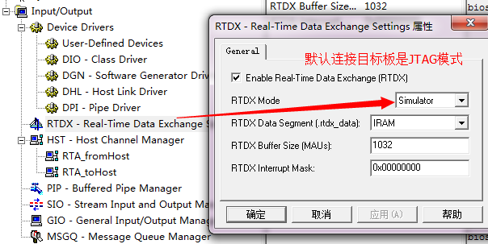
配置好后，重新编译，Load时就不会再弹出那警告框了！
总结一下：其实，就让上文看到的一样，DSP/BIOS的模块还有很多，上面只是挑了几个比较常用的说了说，就光信号同步那一大块就还有消息邮箱、消息队列等，所谓举一反三，这些模块的功能及函数定义，或者想了解更多关于DSP/BIOS知识，都可以从下面的手册上找到：
除此之外，要想灵活的使用DSP/BIOS，毕竟它是一个操作系统，熟悉操作系统的基本概念很重要，如果学习或使用过uCOS ii或Linux这些去学习DSP/BIOS就小菜一碟了！
初始化DSP：DSP/BIOS程序从C/C++环境入口c_int00开始运行。对于C6000平台，在c_int00开始处，系统栈指针（B15）和全局页指针（B14）被分别设置在堆栈断的末尾和.bss断的开始。控制寄存器AMR、IER、CSR等被初始化；
初始化.bss段：当堆栈被设置完成后，初始化任务被调用，利用.cinit的记录对.bss断的变量进行初始化；
调用BIOS_init初始化用到的各个模块：BIOS_init调用MOD_init对配置用到的各个模块进行初始化，包括HWI_init、HST_init、IDL_init等；
处理.pinit表：.pinit表包含一些指向初始化函数的指针，对C++程序，全局对象类的创建也在此时完成；
调用用户程序的main函数：用户main函数可以是C/C++函数或者汇编语言函数，对于汇编函数，使用_main的函数名。由于此时的硬件、软件中断还没有被使能，所以在用户主函数的初始化中需要注意，可以使能单独的中断屏蔽位，但是不能调用类似HWI_enable的接口来使能全局中断；
调用BIOS_start启动DSP/BIOS：BIOS_start在用户main函数退出后被调用，它负责使能使用的各个模块并调用MOD_startup启动每个模块。包括CLK_startup、PIP_startup、SWI_startup、HWI_startup等。当TSK管理模块在配置中被使用时，TSK_startup被执行，并且BIOS_start将不会结束返回；
执行idle循环：有两种方式进入idle循环。当TSK管理模块使能时，任务调度器运行的TSK_idle任务调用IDL_loop在其它任务空闲时进入idle循环；当TSK模块未被使用时，BIOS_start调用将返回，并执行IDL_loop进入永久的idle循环，此时硬件和软件中断可以抢占idle循环得到执行。由于idle循环中管理和主机的通信，因此主机和目标机之间的数据交互可以进行了
从上述的启动过程我们可以分析一下为什么在操作系统中main函数不需要使用while(1)死循环：因为在DSP/BIOS中，main函数只是被操作系统调用用来进行初始化的，执行完main函数后才能启动操作系统。这也给了我一个启示——如果我想在一个工程中既可以使用操作系统，又可以在某些情况下简单的禁用操作系统，只需定义一个宏开关main函数中while(1)循环就可以了！
下图是TI公司倡导的DSP软件架构，
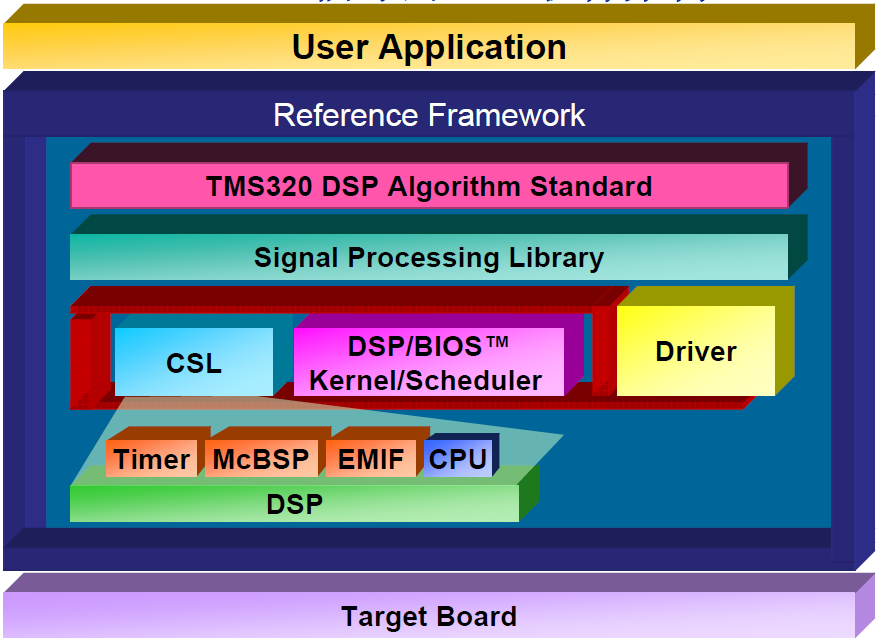
由图可知，
由CSL负责DSP芯片级外设的驱动，这部分是软件开发人员最底层的代码，DSP/BIOS负责底层的调度，方便应用层的管理，还有Driver模块，我认为是其它的非DSP芯片级的驱动，如USB/PCI等外设接口
中间层主要是算法相关的东西，TI提供了一个DSP算法的标准，只要按该标准编写的算法能很容易的实现不同DSP之间的移植
再上层就是应用程序了
这就是TI的DSP高端大气上档次的三层软件架构！